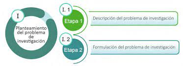
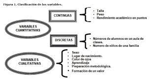

Primera y Segunda variable
Primera variable:
Lenguajes
Definición de Lenguajes.
Lenguaje informático especialmente diseñado para describir el conjunto de acciones consecutivas o instrucciones que un equipo informático debe ejecutar.
El lenguaje puede referirse al conjunto de términos, símbolos y convenciones utilizados para la comunicación entre sistemas informáticos, como en el caso de los lenguajes de marcado (HTML, XML), lenguajes de consulta de bases de datos (SQL) o los lenguajes de descripción de hardware.
Importancia de los Lenguajes
Es un lenguaje formal que, mediante una serie de instrucciones, le permite a un programador escribir un conjunto de órdenes, acciones consecutivas, datos y algoritmos para, de esa forma, crear programas que controlen el comportamiento físico y lógico de una máquina.
Mediante este lenguaje se comunican el programador y la máquina, permitiendo especificar, de forma precisa, aspectos como:
- cuáles datos debe operar un software específico;
- cómo deben ser almacenados o transmitidos esos datos;
- las acciones que debe tomar el software dependiendo de las circunstancias variables.
Nos ayuda a aprender a solucionar problemas de lógica e ingenio, creando soluciones desde cero a paradigmas complejos con base en un pensamiento estructurado.
Son la herramienta fundamental para la creación de software. Aplicados a la industria, los lenguajes de programación se utilizan para codificar las instrucciones que controlarán la máquina encargada de fabricar los productos.
Segunda Variable
Programación
Definición de Programación
La programación informática es todo proceso que involucra el diseño, codificación, mantenimiento, y protección de cualquier fuente de programas.
La programación es el proceso de diseñar, codificar, depurar y mantener el código fuente de un programa de computadora, que se utiliza para realizar una tarea específica. La programación implica escribir instrucciones que una computadora puede entender y ejecutar para producir resultados deseados. Estas instrucciones se escriben en un lenguaje de programación, que puede ser de alto nivel o de bajo nivel, dependiendo del nivel de abstracción que ofrezca.
La programación es una habilidad fundamental en el mundo digital y se utiliza para crear software, aplicaciones, juegos, sistemas operativos, páginas web y muchas otras herramientas y tecnologías que usamos en nuestra vida diaria. Para programar, es necesario tener una comprensión sólida de los conceptos fundamentales de la programación, como las estructuras de control de flujo, los tipos de datos, las funciones y los algoritmos, entre otros. También se requiere habilidad para resolver problemas y pensar de manera lógica y creativa.
Lenguajes de programación
Los lenguajes de programación son conjuntos de reglas sintácticas y semánticas que se utilizan para escribir programas de computadora. Estos lenguajes se utilizan para comunicarle a una computadora qué es lo que debe hacer en términos de procesamiento de datos y cálculos. El código es el conjunto de instrucciones que un desarrollador ordena ejecutar a un computador. Dicho código está estructurado según las guías correspondientes a un lenguaje de programación específico.
Un lenguaje de programación es una técnica estándar de comunicación que permite expresar las instrucciones que han de ser ejecutadas en una computadora. Consiste en un conjunto de reglas sintácticas y semánticas que definen un programa informático. Un lenguaje de programación permite a un programador especificar de manera precisa: sobre qué datos una computadora debe operar, cómo deben ser estos almacenados y transmitidos y, qué acciones debe tomar bajo una variada gama de circunstancias. Todo esto, a través de un lenguaje que intenta estar relativamente próximo al lenguaje humano o natural. Un programa escrito en un lenguaje de programación necesita pasar por un proceso de compilación, es decir, ser traducido al lenguaje de máquina, o ser interpretado para que pueda ser ejecutado por el ordenador. (ERIK SANTIZO, 2007, p 8).
Los lenguajes de programación son un conjunto de reglas y sintaxis que se utilizan para escribir programas de software. Son lenguajes formales diseñados para comunicar instrucciones a una computadora o dispositivo electrónico.
Los lenguajes de programación son utilizados por los programadores para escribir programas que controlan el comportamiento de la computadora, desde aplicaciones de software hasta sistemas operativos y controladores de dispositivos. Un programa de software escrito en un lenguaje de programación es traducido o interpretado por una computadora para que pueda ser ejecutado.
Existen muchos lenguajes de programación diferentes, cada uno con su propia sintaxis, semántica y características específicas. Algunos lenguajes de programación se utilizan para aplicaciones generales, mientras que otros están diseñados para tareas específicas, como procesamiento de datos, ciencia de datos, inteligencia artificial, aplicaciones web, aplicaciones móviles, juegos y sistemas embebidos, entre otros
|
|
|
|---|---|
|  |  |